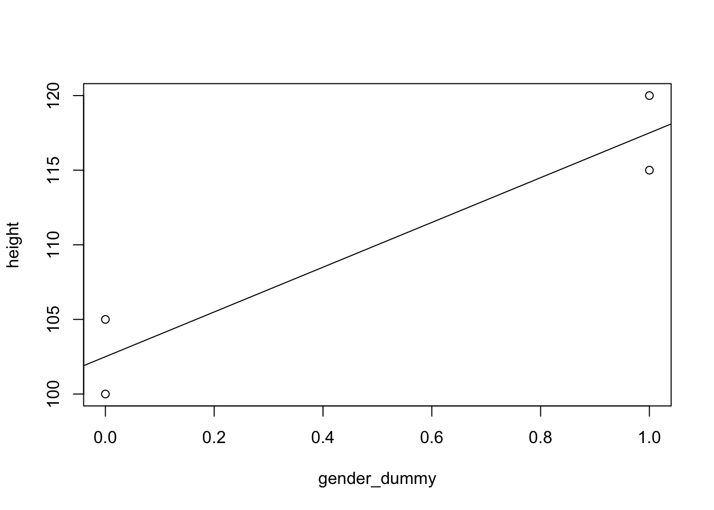
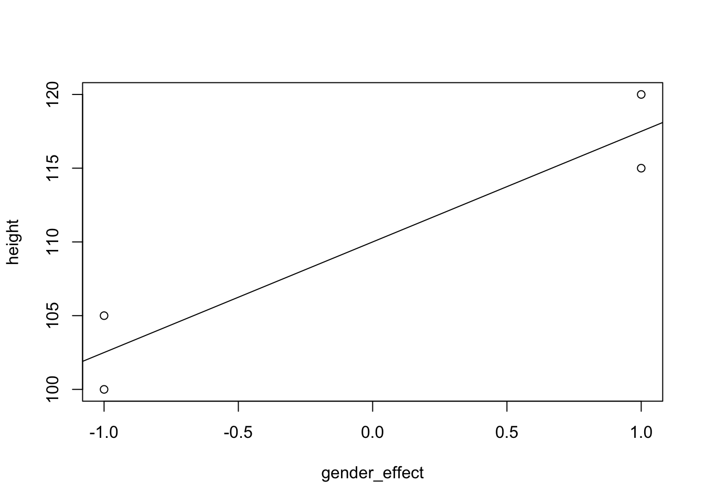
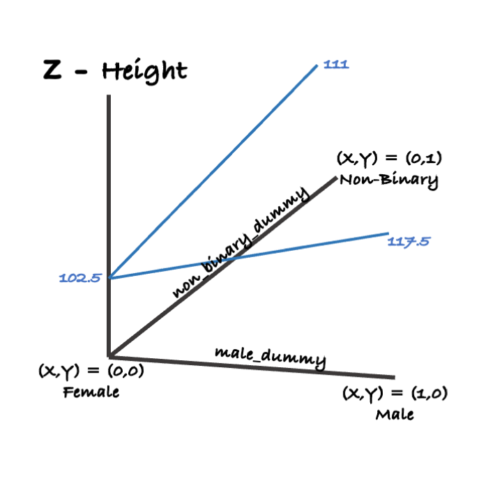

Coding (R)
Course Overview
Red means that the page does not exist yet
Orange means that the page is started
When running a linear model, such as a simple regression or multiple regression, it can be helpful to include categorical variables. However, these categorical variables will not (usually?) have sensible numbers that can be associated with them, and predictors in regressions need to be numeric. We can address this by using dummy or effect coding. We’ll start by addressing this for binary categorical variables.
Binary variables
Dummy coding
For categorical variables, you can give them a value of 0 or 1 if they are binary to reflect which of the two options applies to a data point. For example, if you had female and male participants (we’ll deal with having more than 2 genders later), you could give 0 to females, and 1 to males. This would make females the default or baseline gender, and so your model would tell you how you expect height to increase (or decrease) for a male compared to a female.
coding_df = data.frame(
height = c(100,115,120,105),
gender = c("female","male","male","female"),
gender_dummy = c(0,1,1,0)
)
knitr::kable(coding_df)| height | gender | gender_dummy |
|---|---|---|
| 100 | female | 0 |
| 115 | male | 1 |
| 120 | male | 1 |
| 105 | female | 0 |
So if we wanted to predict height of an individual by their gender, then we could generate a linear model with the dummy coded gender as a predictor:
dummy_lm = lm(height ~ gender_dummy, coding_df)
summary(dummy_lm)
Call:
lm(formula = height ~ gender_dummy, data = coding_df)
Residuals:
1 2 3 4
-2.5 -2.5 2.5 2.5
Coefficients:
Estimate Std. Error t value Pr(>|t|)
(Intercept) 102.500 2.500 41.000 0.000594 ***
gender_dummy 15.000 3.536 4.243 0.051317 .
---
Signif. codes: 0 '***' 0.001 '**' 0.01 '*' 0.05 '.' 0.1 ' ' 1
Residual standard error: 3.536 on 2 degrees of freedom
Multiple R-squared: 0.9, Adjusted R-squared: 0.85
F-statistic: 18 on 1 and 2 DF, p-value: 0.05132The Intercept is the mean height of females (as females are the default gender here). The estimate for gender dummy tells you how height increases by 15cm if you go from 0 (female) to 1 (male). This gives you similar insights into a t-test (see below). If you were to plot it, females would be at 0, and males at 1:
plot(height ~ gender_dummy, coding_df)
abline(lm(height ~ gender_dummy, coding_df))
You’ll be happy to know that you get the same p-values for this linear model (look at the Pr(>|t|) value for gender_dummy)…
this_summary = summary(dummy_lm)
this_summary$coefficients Estimate Std. Error t value Pr(>|t|)
(Intercept) 102.5 2.500000 41.000000 0.0005943537
gender_dummy 15.0 3.535534 4.242641 0.0513167019… as you do for a t-test:
t.test(height ~ gender_dummy, coding_df, var.equal = TRUE)
Two Sample t-test
data: height by gender_dummy
t = -4.2426, df = 2, p-value = 0.05132
alternative hypothesis: true difference in means between group 0 and group 1 is not equal to 0
95 percent confidence interval:
-30.2121746 0.2121746
sample estimates:
mean in group 0 mean in group 1
102.5 117.5 Effect coding
Effect coding is similar to dummy coding except that instead of giving 0 to one group you give -1 to it. This effect coded variable will act as a binary contrast between both levels, with neither level being the default/baseline (Some advantages/disadvantages of effect/dummy coding are addressed within the multiple regressions page). Effect coding gives you the same p-value as dummy coding:
coding_df$gender_effect = ifelse(coding_df$gender == "female", -1, 1)
effect_lm = lm(height ~ gender_effect, coding_df)
summary(effect_lm)
Call:
lm(formula = height ~ gender_effect, data = coding_df)
Residuals:
1 2 3 4
-2.5 -2.5 2.5 2.5
Coefficients:
Estimate Std. Error t value Pr(>|t|)
(Intercept) 110.000 1.768 62.225 0.000258 ***
gender_effect 7.500 1.768 4.243 0.051317 .
---
Signif. codes: 0 '***' 0.001 '**' 0.01 '*' 0.05 '.' 0.1 ' ' 1
Residual standard error: 3.536 on 2 degrees of freedom
Multiple R-squared: 0.9, Adjusted R-squared: 0.85
F-statistic: 18 on 1 and 2 DF, p-value: 0.05132Note though that because there is no baseline level, the baseline is half way between females and males. The Intercept is now half way between the mean for females and males, and the estimate for gender effect is half the difference. This is because the contrast between females (-1) and males (1) is twice that for effect coding than dummy coding:
plot(height ~ gender_effect, coding_df)
abline(lm(height ~ gender_effect, coding_df))
Variables with more than 2 levels
You might have a categorical variable that has more than 2 levels, and then you can no longer address everything within a single variable because you can’t make a binary contrast between more than 2 levels, so you can’t use effect coding (or at least, it’s awkward to interpret). You can use dummy coding though to have a predictor that has a value of 1 for a level, and 0 for all other levels. Let’s stick with height and gender above, but now include “non-binary” as a third level. Here’s how we could code this.
coding_df = data.frame(
height = c(100,115,120,105,110,112),
gender = c("female","male","male","female","non-binary","non-binary"),
male_dummy = c(0,1,1,0,0,0),
female_dummy = c(1,0,0,1,0,0),
non_binary_dummy = c(0,0,0,0,1,1)
)
knitr::kable(coding_df)| height | gender | male_dummy | female_dummy | non_binary_dummy |
|---|---|---|---|---|
| 100 | female | 0 | 1 | 0 |
| 115 | male | 1 | 0 | 0 |
| 120 | male | 1 | 0 | 0 |
| 105 | female | 0 | 1 | 0 |
| 110 | non-binary | 0 | 0 | 1 |
| 112 | non-binary | 0 | 0 | 1 |
However, regressions need a baseline condition to compare against, so we can’t put in all three of these. Let’s see what happens if we try to put them all in:
summary(lm(height ~ female_dummy + male_dummy + non_binary_dummy, coding_df))
Call:
lm(formula = height ~ female_dummy + male_dummy + non_binary_dummy,
data = coding_df)
Residuals:
1 2 3 4 5 6
-2.5 -2.5 2.5 2.5 -1.0 1.0
Coefficients: (1 not defined because of singularities)
Estimate Std. Error t value Pr(>|t|)
(Intercept) 111.000 2.121 52.326 1.54e-05 ***
female_dummy -8.500 3.000 -2.833 0.066 .
male_dummy 6.500 3.000 2.167 0.119
non_binary_dummy NA NA NA NA
---
Signif. codes: 0 '***' 0.001 '**' 0.01 '*' 0.05 '.' 0.1 ' ' 1
Residual standard error: 3 on 3 degrees of freedom
Multiple R-squared: 0.8934, Adjusted R-squared: 0.8224
F-statistic: 12.57 on 2 and 3 DF, p-value: 0.03479You can see that non_binary_dummy has NAs, because R has chosen it to be the baseline condition that the model is built on. Looking at the estimates: height is expected to be 8.5 cm lower for females than non-binary individuals, and 6.5cm higher for males than non-binary.
Interestingly, some software like R will attempt to do the above for you automatically if you ask it to
summary(lm(height ~ gender, coding_df))
Call:
lm(formula = height ~ gender, data = coding_df)
Residuals:
1 2 3 4 5 6
-2.5 -2.5 2.5 2.5 -1.0 1.0
Coefficients:
Estimate Std. Error t value Pr(>|t|)
(Intercept) 102.500 2.121 48.319 1.95e-05 ***
gendermale 15.000 3.000 5.000 0.0154 *
gendernon-binary 8.500 3.000 2.833 0.0660 .
---
Signif. codes: 0 '***' 0.001 '**' 0.01 '*' 0.05 '.' 0.1 ' ' 1
Residual standard error: 3 on 3 degrees of freedom
Multiple R-squared: 0.8934, Adjusted R-squared: 0.8224
F-statistic: 12.57 on 2 and 3 DF, p-value: 0.03479The problem (as you may have noticed), is that it may make a different decision about what the default level should be. In this case, R chose female as the default gender. Let’s see if our output is the same if we only load in the dummy coding for males and non-binary, thus making female the default gender:
summary(lm(height ~ male_dummy + non_binary_dummy, coding_df))
Call:
lm(formula = height ~ male_dummy + non_binary_dummy, data = coding_df)
Residuals:
1 2 3 4 5 6
-2.5 -2.5 2.5 2.5 -1.0 1.0
Coefficients:
Estimate Std. Error t value Pr(>|t|)
(Intercept) 102.500 2.121 48.319 1.95e-05 ***
male_dummy 15.000 3.000 5.000 0.0154 *
non_binary_dummy 8.500 3.000 2.833 0.0660 .
---
Signif. codes: 0 '***' 0.001 '**' 0.01 '*' 0.05 '.' 0.1 ' ' 1
Residual standard error: 3 on 3 degrees of freedom
Multiple R-squared: 0.8934, Adjusted R-squared: 0.8224
F-statistic: 12.57 on 2 and 3 DF, p-value: 0.03479The outputs are the same, just the labeling of the coefficients is different. You could visualize the above model as follows:
